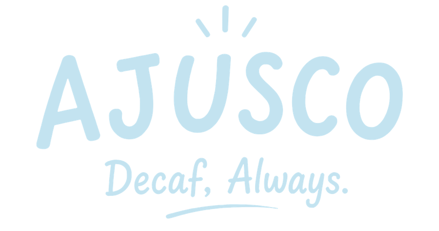
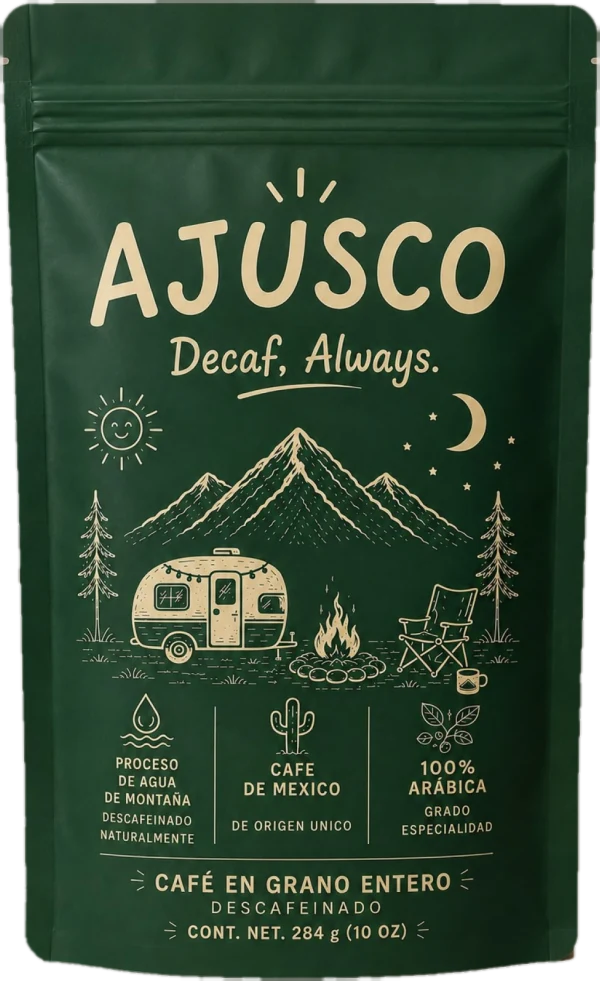
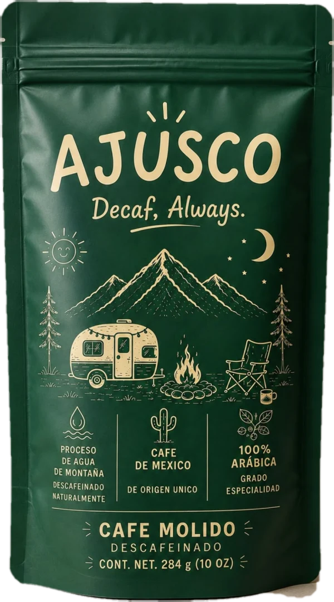
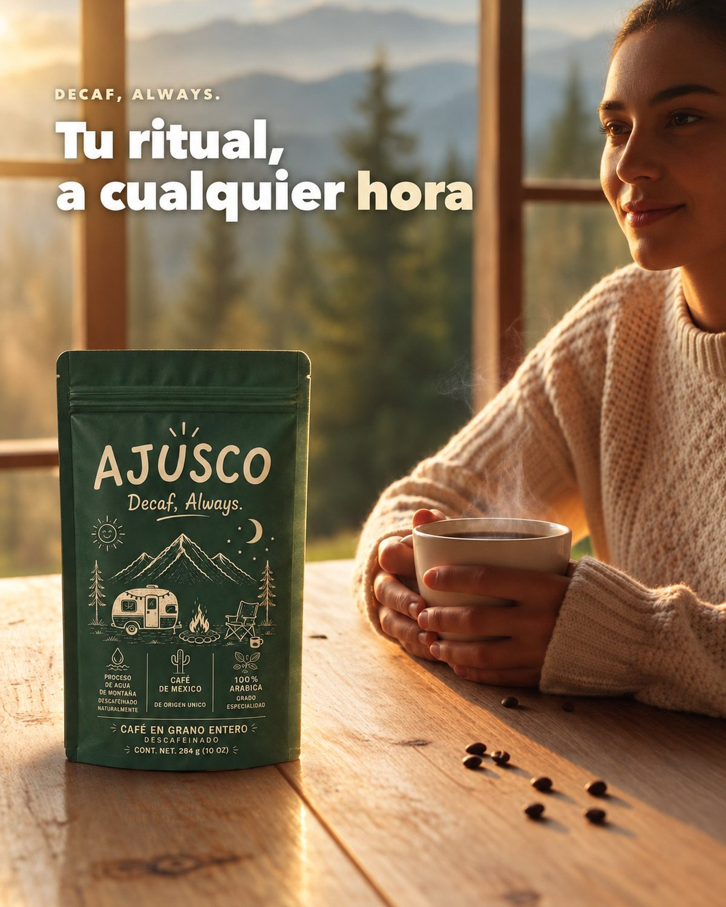
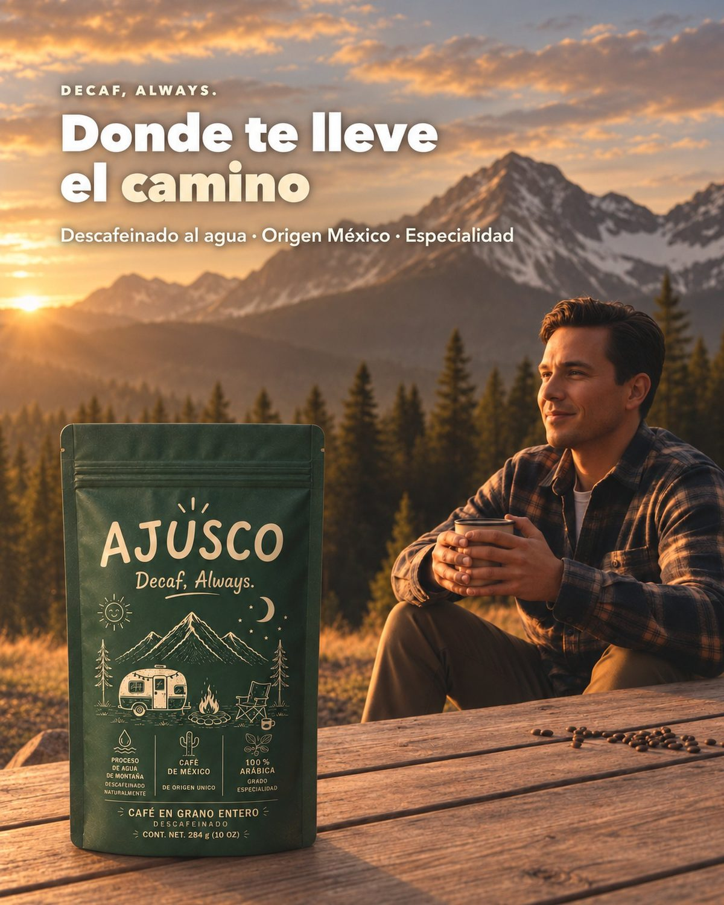
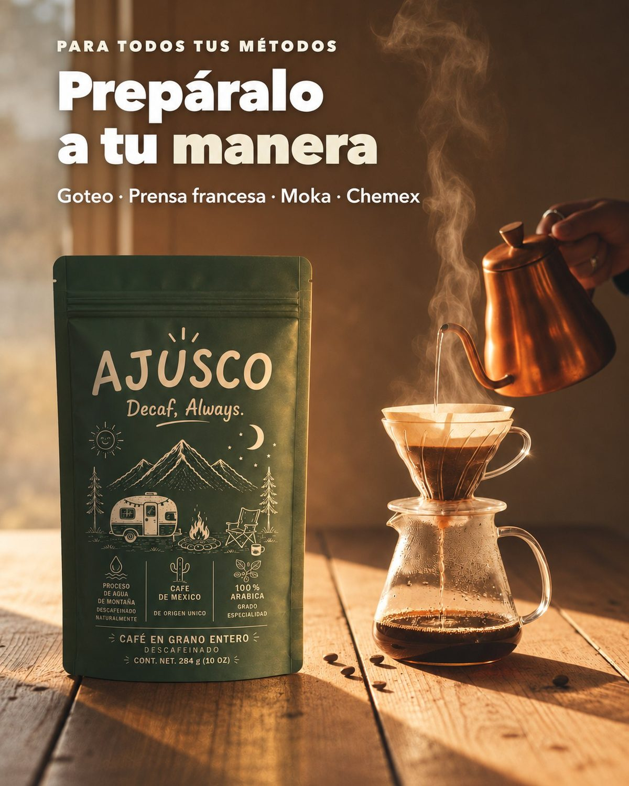
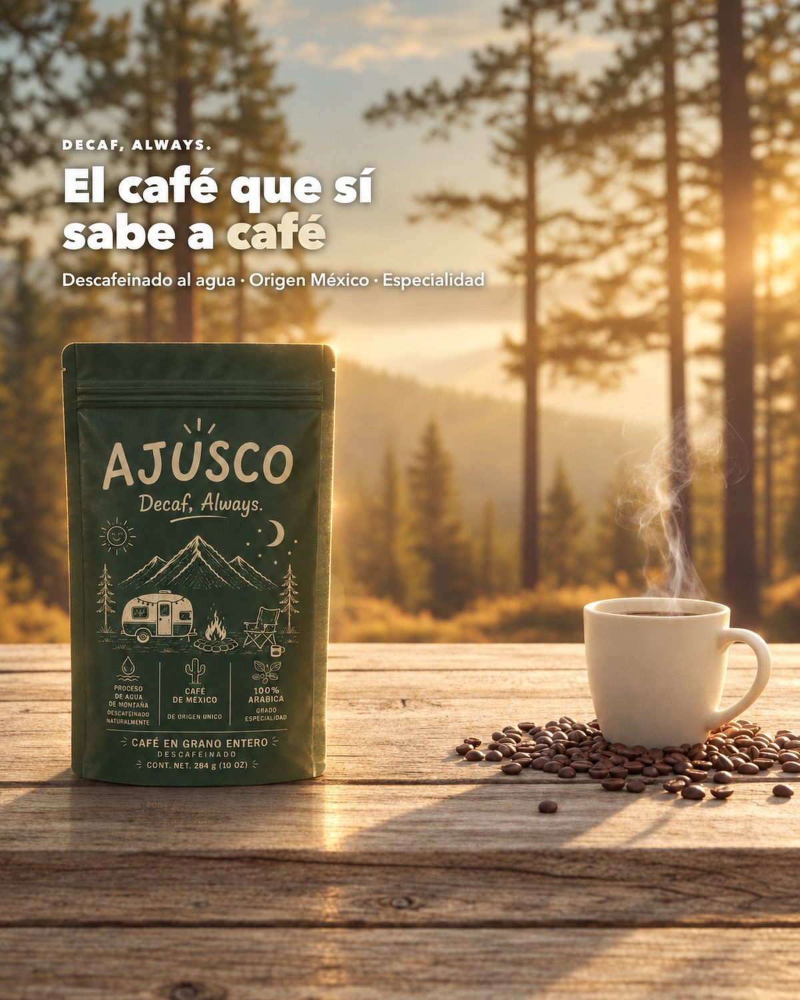

Oaxaca, México · 284 g (10 oz)
Grano entero $298
ProcesoDescafeinado al agua
TuesteMedio
TuesteMedio
NotasChocolate, caramelo, nuez
ParaEspresso, prensa, V60, Chemex
ParaEspresso, prensa, V60, Chemex

Descafeinado al agua, sin solventes ni químicos. 100% arábica de Oaxaca, tostado en México. Para la tarde, la noche, el embarazo — para cuando quieres café y no cafeína.

Mismo origen, mismo tueste, mismo proceso. Elige grano entero si mueles en casa, o molido si quieres abrir y preparar.

El decaf industrial usa solventes químicos. El nuestro usa agua de montaña — y el café conserva todo su cuerpo, aroma y sabor.
El vapor prepara suavemente los granos verdes de café.
Una solución a base de agua remueve la cafeína, cuidando el sabor.
Los granos se secan suavemente y quedan listos para tostar.

Para quienes aman el café pero cuidan la cafeína — de día o de noche, sin remordimientos.



AJUSCO nació cuando la cafeína dejó de sentarnos bien y lo único que había en el anaquel era un descafeinado industrial, aguado y sin alma.
Así que hicimos el café que queríamos tomar: de especialidad, 100% arábica, de Oaxaca, descafeinado con agua y tostado en México. Para seguir con el ritual, a cualquier hora.